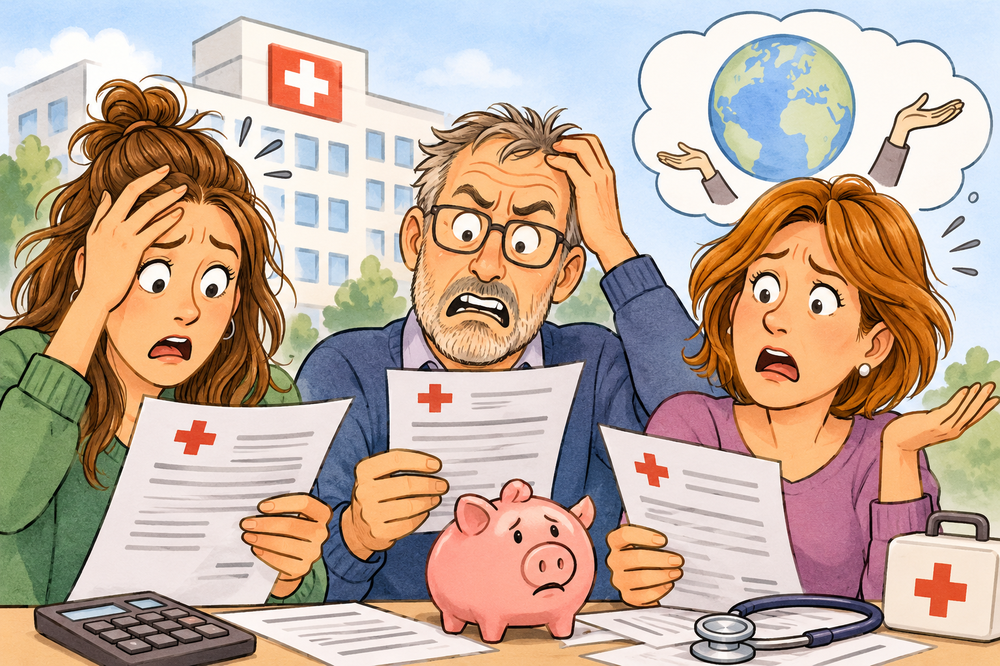

Anderswo ist es schlimmer: Das Schweizer Gesundheitswesen und die Kunst der Resignation

Ich erzähle euch drei Geschichten.
Karin, eine 25-jährige Frau, hat ihren Vater verloren und sich wegen einer leichten Depression infolge des Trauerfalls an das Gesundheitssystem gewandt. Sie wurde an einen Psychiater überwiesen, nahm für kurze Zeit Psychopharmaka und fühlt sich inzwischen besser. Doch die Krankenkassen weigern sich, ihr irgendeine Zusatzversicherung anzubieten: Sie gilt jetzt als Risikopatientin. Ihr bleibt also nur die obligatorische Grundversicherung, ohne die Möglichkeit, zusätzliche Versicherungsleistungen in Anspruch zu nehmen. Als man ihr das mitteilte, bekam Karin Angstzustände. Sie rief ihren Psychiater an, der ihr erneut ein leichtes Beruhigungsmittel verschrieb. Die kurze telefonische Konsultation wurde Karin gemäss nationalem Arzttarif verrechnet und kostete rund 42 CHF. Darüber regte sich Karin so sehr auf, dass die beruhigende Wirkung des Medikaments gleich wieder zunichtegemacht wurde.
Reto, ein 58-jähriger Mann, erlitt einen Schlaganfall, von dem er sich gut erholt hat (zumindest theoretisch). Als er jedoch bemerkte, dass er kleinere kognitive Probleme hatte, die vorher nicht vorhanden gewesen waren, wandte er sich an seinen Hausarzt. Dieser spielte die Sache herunter und sagte, Reto habe schliesslich schon immer einen hohen Blutdruck gehabt. Dabei liess er durchblicken, dass es sich wohl im Wesentlichen um «nichts anderes» handle. Seit acht Monaten wartet Reto darauf, von einem Neurologen untersucht zu werden, aber er scheint gegen eine Wand zu laufen: Zunächst will ihn der Hausarzt nicht an einen Spezialisten überweisen, dann setzt er ihn auf eine Warteliste, die endlos zu sein scheint, und schliesslich, weil Reto weiter insistiert, erklärt der Hausarzt, er wolle ihn nochmals sehen. Jede Konsultation kostet rund 170 CHF. Reto hat also bereits 510 CHF für nutzlose Besuche beim Hausarzt bezahlt und konnte immer noch keinen Neurologen aufsuchen. Sein Blutdruck stieg noch weiter, als er die Rechnungen des Hausarztes sah.
Brigitte, eine 39-jährige Frau, leidet seit einer Geburt an einer Schilddrüsenunterfunktion, die nie wieder verschwunden ist. Auch sie wollte einen Spezialisten aufsuchen: Monatelang weigerte sich ihre Hausärztin, ihr eine Überweisung auszustellen (ohne Überweisung nimmt ein Endokrinologe keine neuen Patienten auf). Monatelang liess man lediglich Blutuntersuchungen durchführen, aber kein Spezialist übernahm ihren Fall. Die Hausärztin sagt, dass sich diese Art von Funktionsstörung nach einer Geburt in vielen Fällen von selbst zurückbildet. Dumm nur, dass Brigitte vor vier Jahren entbunden hat und sich das Problem überhaupt nicht von selbst erledigt hat. Die sieben sehr kurzen E-Mails, die Brigitte und ihre Ärztin ausgetauscht haben (Brigitte bat darum, einen Endokrinologen aufsuchen zu können, die Hausärztin antwortete in einer einzigen Zeile, dass sie dies nicht für notwendig halte, Brigitte insistierte, die Ärztin lehnte ab, Brigitte bat zumindest um weitere Abklärungen), kosteten Brigitte 249 CHF.
Was haben diese Geschichten gemeinsam? Vielleicht nur, dass das Schweizer Gesundheitswesen verzweifelt versucht, Kosten zu senken. Die Menschen zahlen immer höhere Beträge, bekommen aber gleichzeitig wichtige medizinische Leistungen verweigert. Laut den Nachrichten liegt es daran, dass die Bevölkerung immer älter wird. Laut Brigitte ist ihre unfähige Hausärztin schuld. Laut Reto sind es die Neurologen. Karin wiederum gibt dem nationalen Arzttarif die Schuld. Keiner der drei glaubt allerdings, dass sich etwas ändern kann oder sollte. Sie erinnern mich an jene Zeile aus Bocca di Rosa, einem Lied von Fabrizio De André: «Die Gegenmassnahmen beschränkten sich bis dahin auf Beschimpfungen». Und ich frage mich, ob und wann die Schweizer versuchen werden, über das blosse Schimpfen hinauszugehen und tatsächlich Veränderungen einzufordern.
Halten wir kurz inne und denken darüber nach. Das Schweizer Gesundheitswesen gilt als erstklassig, aber vielleicht weiss nicht jeder, wie es funktioniert. Deshalb fasse ich es kurz zusammen. Jede in der Schweiz wohnhafte Person ist verpflichtet, eine Grundversicherung abzuschliessen und dafür eine monatliche Prämie zu bezahlen, die leicht bei rund 400 Franken liegen kann (je nach Alter, Wohnort und gewähltem «Versicherungsmodell»). Die Prämie deckt aber nicht unbedingt die medizinischen Kosten ab dem ersten Franken. Jedes Jahr muss man nämlich zunächst eine Franchise von 300 bis 2.500 Franken aus eigener Tasche bezahlen und sich anschliessend mit weiteren 10 % an den Gesundheitskosten beteiligen (dem Selbstbehalt), bis zu einem Maximum von 700 Franken.
Mit anderen Worten: Zusätzlich zu den Versicherungsprämien muss man im Bedarfsfall bereit sein, bis zu 3.200 Franken pro Jahr selbst zu bezahlen. Und dabei sind allfällige Zusatzversicherungen (für den Zahnarzt, für Brillen, für Spitalaufenthalte …) noch gar nicht berücksichtigt.
Das fand ich schon immer absurd, denn wie viel man im Jahr bezahlt, entscheidet man letztlich danach, wie viel man darauf «wettet», im kommenden Jahr medizinische Leistungen in Anspruch nehmen zu müssen. Schauen wir uns zwei Beispiele an:
Szenario A: Ich wette darauf, dass ich nicht krank werde und keine medizinischen Leistungen benötige. Deshalb wähle ich die günstigste Prämie: 370 CHF pro Monat (das gilt nicht für alle, ist aber ein realistischer Betrag, den wir hier als Beispiel verwenden können). Diese entspricht der höchsten Franchise. Das bedeutet, dass ich, wenn ich medizinische Leistungen benötige, die ersten 2.500 CHF selbst bezahlen muss. Die darüber hinausgehenden Kosten übernimmt die Krankenkasse, abgesehen vom Selbstbehalt (maximal 700 CHF pro Jahr). Insgesamt bezahle ich also 4.440 CHF pro Jahr an Prämien und im Bedarfsfall weitere 3.200 CHF (insgesamt 7.640 CHF).
Szenario B: Ich weiss, dass mich eine gynäkologische Vorsorgeuntersuchung und eine Mammografie mindestens 650 CHF kosten werden (ich weiss es, weil ich genau diesen Betrag letztes Jahr bezahlt habe). Das bedeutet, dass ich damit bereits über der Mindestfranchise von 300 CHF liegen werde. Also wähle ich diese, auch wenn sie eine höhere Monatsprämie mit sich bringt (500 CHF pro Monat). In diesem Fall muss ich nur die ersten 300 CHF selbst bezahlen; die darüber hinausgehenden Kosten übernimmt die Krankenkasse (abgesehen vom Selbstbehalt, der weiterhin auf maximal 700 CHF pro Jahr begrenzt ist). In diesem Szenario ist der Betrag, den ich auf jeden Fall bezahle, höher (6.000 statt «nur» 4.440 CHF an Versicherungsprämien). Der Gesamtbetrag, den ich nur dann bezahle, wenn ich medizinische Leistungen benötige, ist dagegen niedriger: maximal 7.000 CHF pro Jahr statt 7.640 CHF.
Je nachdem, ob ich mit meinen Wetten auf meinen medizinischen Bedarf im kommenden Jahr richtig liege, könnte ich also 640 CHF sparen. Tatsächlich könnte ich sogar noch gewagtere Wetten eingehen: Da ich kurzsichtig bin, könnte ich eine Zusatzversicherung abschliessen, die mir einen Teil der Kosten für Korrekturlinsen zurückerstattet (150 CHF pro Jahr, bei einer zusätzlichen Monatsprämie von 12 CHF, also 144 CHF pro Jahr. Damit spare ich 6 CHF, wenn ich im nächsten Jahr eine neue Sehstärkenkorrektur brauche, oder verschwende 144 CHF, wenn nicht). Oder ich könnte eine Zusatzversicherung für gynäkologische Vorsorgeuntersuchungen abschliessen (und hier halte ich es durchaus für eine gute Wette, Vorsorgeuntersuchungen durchführen zu lassen, zumal allein die Eierstockzyste, die mir letztes Jahr entfernt wurde, 8.200 CHF für den Spitalaufenthalt und 5.840 CHF für den chirurgischen Eingriff gekostet hat. Wenn ein fauler Eierstock Kosten von über 14.000 CHF verursacht hat, möchte ich mir gar nicht vorstellen, wie hoch Retos Rechnungen ausfallen könnten).
Das sind nur Beispiele, aber sie zeigen, wie viel die Menschen in der Schweiz für das Gesundheitswesen bezahlen und dass das System eine Art «Wette» darauf beinhaltet, wofür es sich zu bezahlen lohnt. Ich persönlich finde das ein bisschen sadistisch.
Kommen wir nun zurück zu den Geschichten, die ich eingangs erzählt habe: Karin, Reto und Brigitte haben allen Grund, stinksauer zu sein. Wenn man sie aber fragt, warum sie nicht für eine Volksinitiative zur Änderung der Verhältnisse stimmen (die Schweiz ist voller Volksinitiativen, hier gibt es praktisch jede Woche eine Abstimmung, und die Schweizer sind zu Recht sehr stolz auf ihre Demokratie), zucken sie mit den Schultern und sagen: «Tja, anderswo ist es eben schlimmer».
Die Schweizer Bevölkerung scheint gegenüber bestimmten Situationen eine sehr hohe Toleranzschwelle zu haben. Die Prämien steigen, die Gesundheitskosten werden immer belastender, und trotzdem gilt das System weiterhin als grundsätzlich unantastbar.
Und wenn jemand protestiert, lautet die Antwort oft, dass es «anderswo schlimmer ist».
Aber seit wann sollte die Tatsache, dass die Dinge anderswo schlechter funktionieren, uns davon abhalten, zu verlangen, dass sie hier besser funktionieren? Könnten wir nicht aufhören, Situationen als normal zu betrachten, die eigentlich nicht normal sein sollten? Ich sage ja nicht, dass wir eine Revolution machen sollen. Aber zumindest Fragen stellen, Antworten verlangen, öffentlich diskutieren und nicht alles einfach passiv hinnehmen.
Es gibt eine Art Schweigekultur, die Angst, sich zu exponieren, und jene besondere Form des Konformismus, bei der man nicht infrage stellt, was als nationale Spitzenleistung präsentiert wird. Fast so, als wäre es unanständig, das Problem überhaupt anzusprechen.
Man hält Abstimmungen darüber ab, ob Kühe mit Hörnern subventioniert werden sollen (ich mache keine Witze), aber das Gesundheitssystem ist unantastbar.
Natürlich möchte ich nicht die gesamte Bevölkerung als passiv darstellen. Es gibt Patientenorganisationen, Volksinitiativen, Abstimmungen und Mobilisierungen. Die interessante Frage ist vielmehr, warum es trotz all dieser Aktivitäten nicht gelungen ist, genügend politischen Druck aufzubauen, um das Modell grundlegend zu verändern.
Ein System wird nicht allein dadurch gerecht, dass sich alle an seine Ungerechtigkeiten gewöhnt haben. Oder doch?